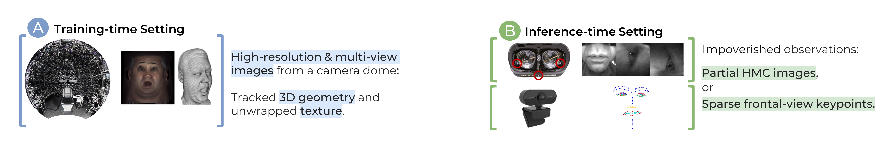
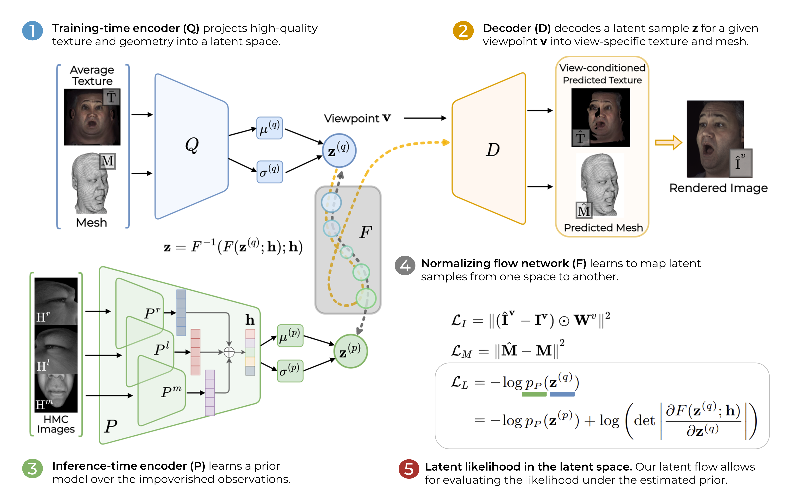
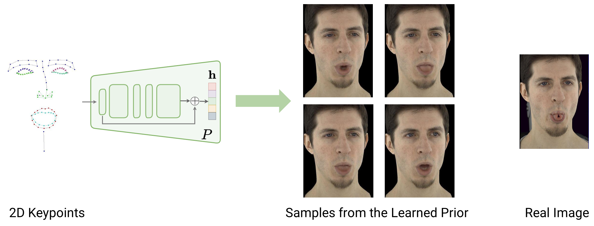
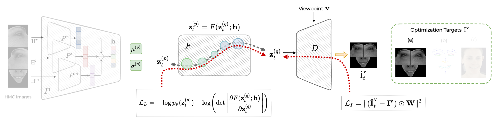

Video
Overview
VR telepresence promises immersive social interactions. To experience the presence of others as genuine, such a system must provide photo-realistic 3D renderings, capture fine-grained details such as pores and hair, and produce subtle facial dynamics.
Neural face avatars that are trained with multi-view imagery from a 40+ camera dome can produce high-fidelity 3D reconstructions. However, at inference time, they must be driven by limited inputs such as partial views recorded by headset-mounted cameras, frontal-view images or sparse facial landmarks from a front-facing camera.

To mitigate this asymmetry, we introduce a prior model that is conditioned on the runtime inputs and tie this prior space to the 3D face model via a normalizing flow in the latent space. Our proposed model, LiP-Flow, consists of two encoders that learn representations from the rich training-time and impoverished inference-time observations.

The normalizing flow network bridges the two representation spaces and transforms latent samples from one domain to another, allowing us to define a latent likelihood objective. We trained our model end-to-end to maximize the similarity of both representation spaces and the reconstruction quality, making the 3D face model aware of the limited driving signals.
Inference-time Optimization
The inference-time encoder learns a prior distribution over less informative driving signals, which is more expressive than the standard Gaussian prior. Here we visualize samples from the estimated prior distribution given 2D keypoints as input.
Our learned prior is able to capture the variance due to missing information in the observations. We leverage it for inference-time optimization, where the latent code is fitted to observations. In addition to the reconstruction objective, we estimate the likelihood of the latent codes by using our learned prior.
Baselines
An overview of latent space concepts illustrated with HMC inputs. Details are skipped for brevity. The decoder, D, decodes a view-specific texture and mesh for a given view vector v and a latent code z.
- (a) The Deep Appearance Model (DAM) of Lombardi et al. (2018) following the conditional VAE framework with N(0,I) prior.
- (b) Replacing the DAM-encoder Q with the HMC-encoder P. The decoder is trained with the HMC images directly.
- (c) Learning to regress the latent codes for HMC views by using a pretrained DAM-encoder Q.
- (d) Training the HMC-encoder as a conditional prior model by minimizing the KL-divergence objective.
- (e) Our LiP-Flow introduces a normalizing flow bridging the latent space of Q and P.
For extensive qualitative and quantitative comparisons, checkout paper and video.
Results

Driving a 3D avatar with impoverished inputs. For the DAM (a) and our proposed model LiP-Flow (e), we first optimize latent codes to reconstruct the inference-time observations, and then reconstruct the full face. For the DAM Regressor baseline (c), we train a regressor to directly predict latent codes from the inference-time inputs by using the pretrained DAM-encoder Q.
Driving a 3D avatar with impoverished inputs. Fitting targets are on the left. Here we flip the rendered and the ground-truth images for a better comparison.
Random Samples from Standard Gaussian Prior
Here we compare our flow-based latent space formulation with the KL-Divergence by using the standard prior Gaussian. We visualize reconstruction results for random latent samples from the standard prior.
Our method (right) learns a more expressive latent space that leads to higher quality and more diverse samples.
BibTeX
@inproceedings{aksan2022lip,
title={LiP-Flow: Learning Inference-time Priors for Codec Avatars via Normalizing Flows in Latent Space},
author={Aksan, Emre and Ma, Shugao and Caliskan, Akin and Pidhorskyi, Stanislav and Richard, Alexander and Wei, Shih-En and Saragih, Jason and Hilliges, Otmar},
booktitle={European Conference on Computer Vision (ECCV)},
year={2022}
}